Advanced Building Revue 11: Refit Stations
Refit stations are a pretty special and separate topic which we use in the refit games. For all the past time we have of course made some development in those and they include a few features to keep in mind. This article will be similar to the overflow articles – it is meant to summarize the progress and show what refit stations are in a nutshell.

Introduction
Refit stations are an interesting topic that has faced some development every time we used them. Due to that I will chronologically start from the simpliest, and introduce new features and layouts as time passed by so it truly shows you the exact process how it was.
Public Server Game 141: The origins
If I remember correctly, the first refit game was psg 141 where we had a very simple station which had only one purpose – just do the job. Drop, refit, pickup, done. 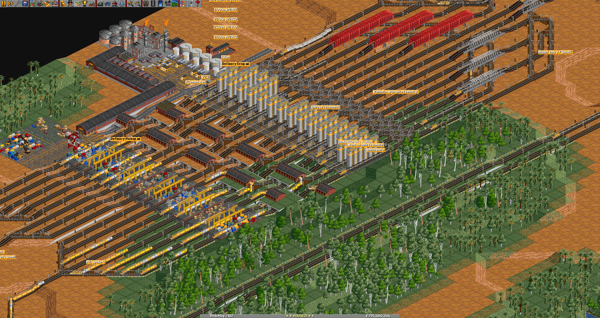

Public Server Game 179: The rediscovery
A long time after that came the psg 179 when refit games were re-discovered. In psg179 we built two refit stations and one station with depots after the station to refit back to primary cargoes.
Food Processing Plant 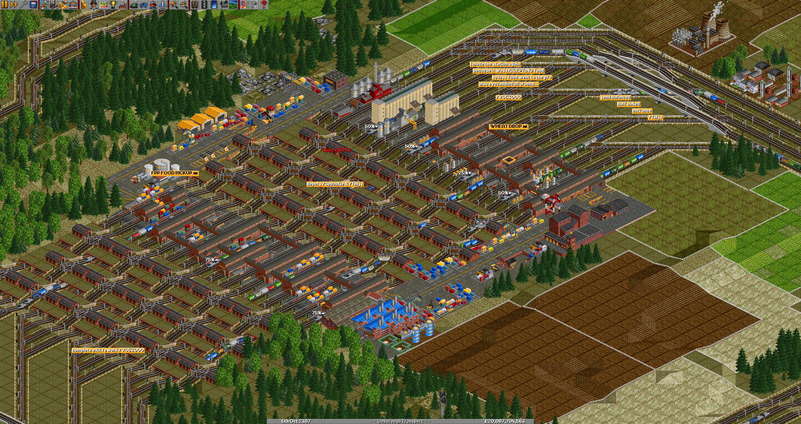
This station is pretty much the same as the old design from 141 so not much new there.

Printing Works 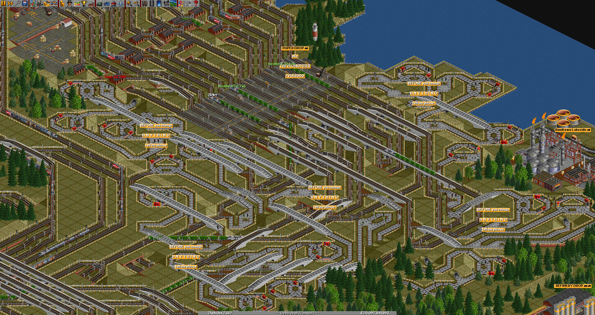
As we discovered, the old design sometimes stacked trains in few depots in case of any problem or jam at the exit. Or even without jams trains just prefered some platforms over the other – as they of course did not see the state of the depots behind them. Therefore the entrance of the station was made using flipflops to spread the traffic evenly in any situation as 1->6.

Public Server Game 186: First big game
As in this game were also eliminated some problems with nework layout and some issues that refit causes were solved, the refit stations gained a new feature as well. In the past, trains just tried to load cargo at the pickup and then leave the station – either go drop the cargo, or refit back to their original cargo. However this often lead to losing the picked up cargo as trains just refit back to primary cargo while being for example 10% loaded. 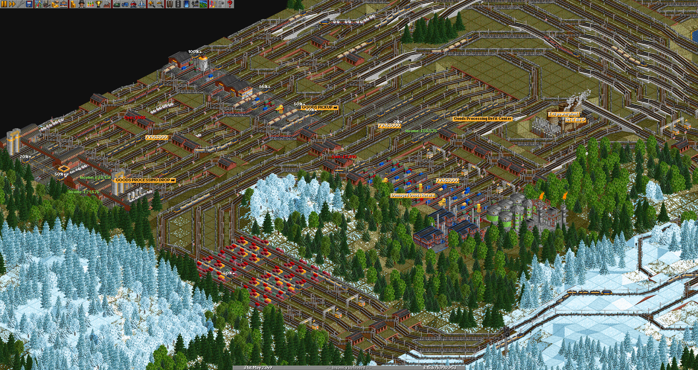 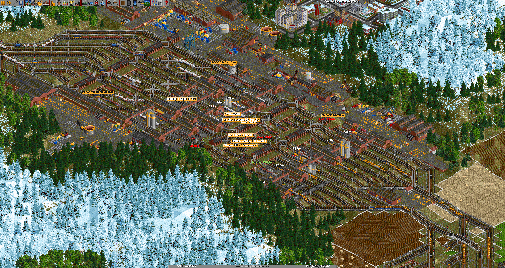
So the cargo return feature was introduced. In case trains loaded less than required amount, they first transfered the cargo back to the pickup station not to waste it, and refit back to primary cargo afterwards. However it needed to make another set of platforms or even a separate station as it was done at the refinery/printing works. While wood drop was more flexible design with space behind it so it was just fine to fit the extra set of platforms behind the station.


Public Server Game 197
The way how refit stations was kept in this game as everything was pretty much the same. However we found out that we could abuse the near end/middle/far end orders to make trains visit the station twice with a conditional order between those stops. Therefore the TL+1 station was introduced. The pickup part is just made a tile longer so trains first come to the near end and try to load. Then they decide whether they loaded enough or not. If not, then they go to the middle or far end and transfer the cargo back. And of course if it loads enough then it just leaves the station as it originally did. 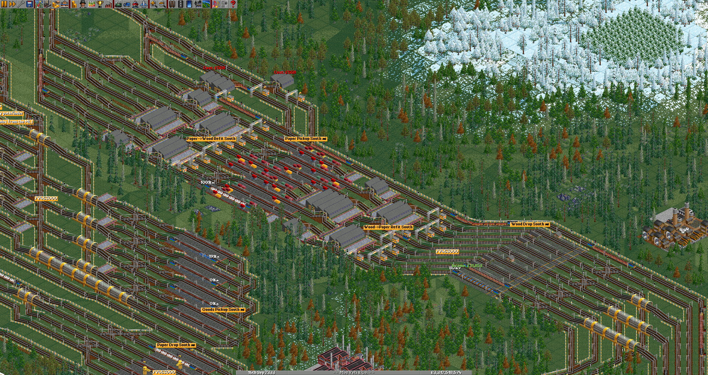

Public Server Game 200
This game did not really bring anything new for refit stations but just some attempts to try a different station layout, using all platforms for all purposes. 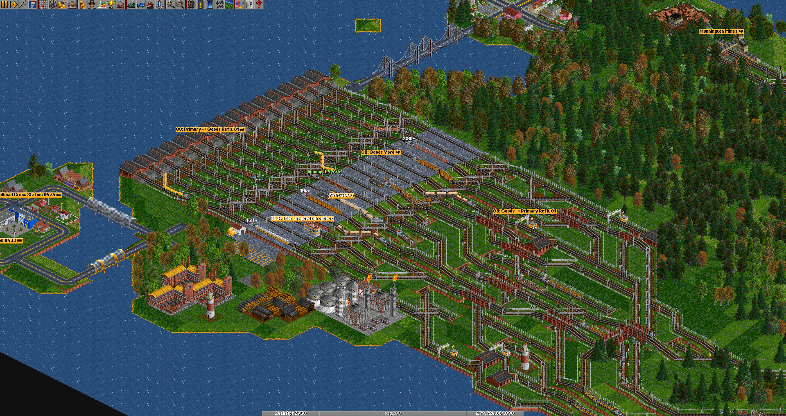

Public Server Game 205
Another gigantic refit game after 186. As the game got bigger and bigger, some stations started to have problems with stacking trains in depots when under stress. 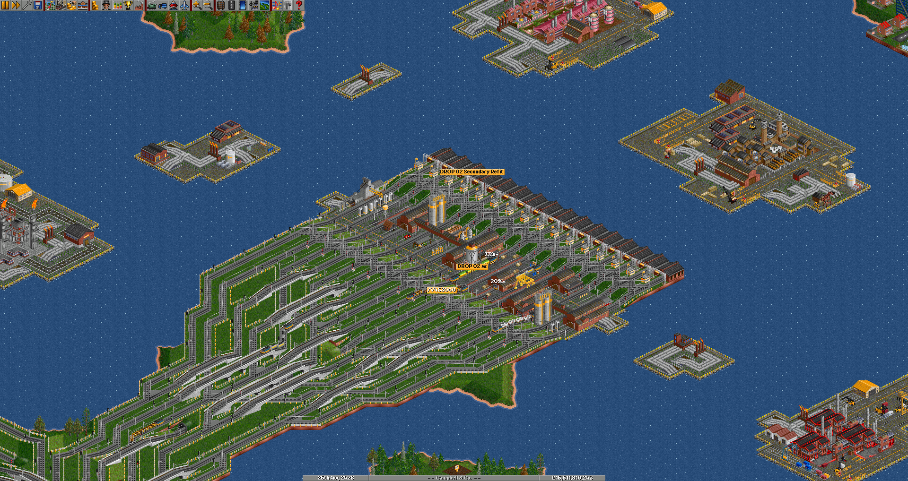 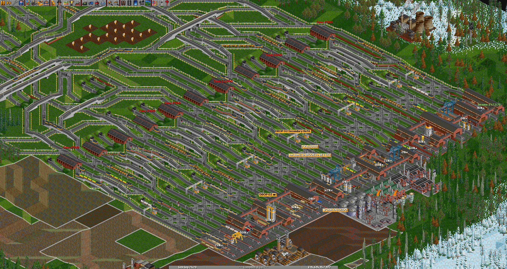
However this time we did not solve it by adding any flipflop logic to the station entrance but we fixed the depots themselves. The first stack-proof depots were introduced in one of the stations, which made absolutely sure that trains cannot stack up in the depots as the depot trains have prio over new trains coming to the station.


Public Server Game 213
As stack-proof depots were brought to life, the idea was used again. The layout remained unchanged as it is not too modifiable. There was still one thing which was new though. So far the stack-proof depots were used only by giving the depot a prio. This is fairly unflexible as it pretty much defines the layout to be just the one – it is sure possible to do it in an other way but probably not better. 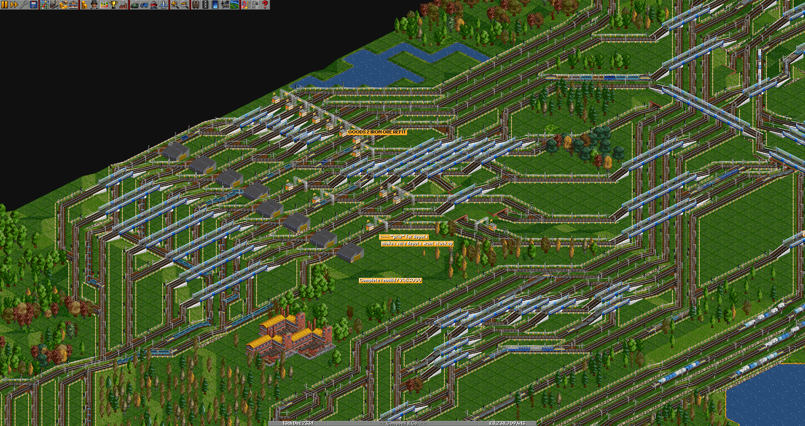 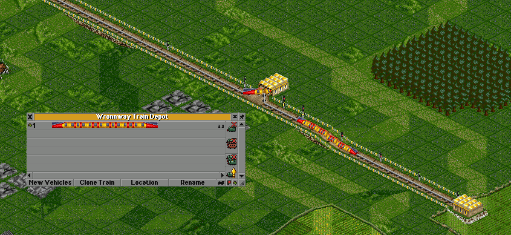 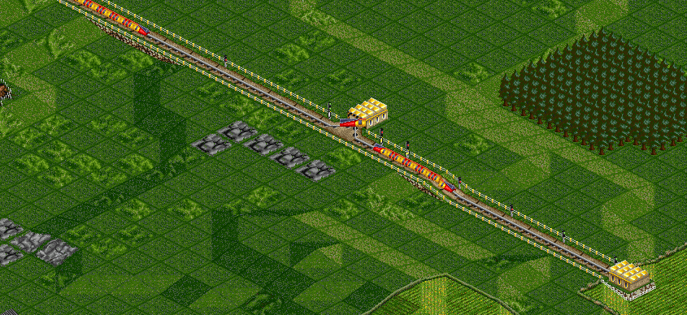
Then came the question what if ro-ro depots get stacking trains. Not using a prio or anything similar, there were used just series of pre-signals. There is just a seemingly useless combo signal added. Let’s see how it works.
First, a train is waiting in front of the depot while another train is exiting the depot. Thing is there is an another train waiting in the depot so we want it to be able to leave it as well.
What is going to happen is that when the first train leaves the block
Both the second train in the depot, and the waiting train in front of the depot are going to be allowed to go at the same time.
But the waiting train is going to get stuck at the combo signal, thus pretty much giving priority to the depot train.
While we also need an exit behind the depot, it makes sure that trains will keep waiting in front of the depot if there is no way out from the depot. This makes sure that the depot will not stack trains and might be enough withou the combo signal in most cases.


Public Server Game 214
This game did not really feature standard refit stations as it was completely different from the scratch. However it included some new interesting designs that were made bacause of the new requirements that this special network had.
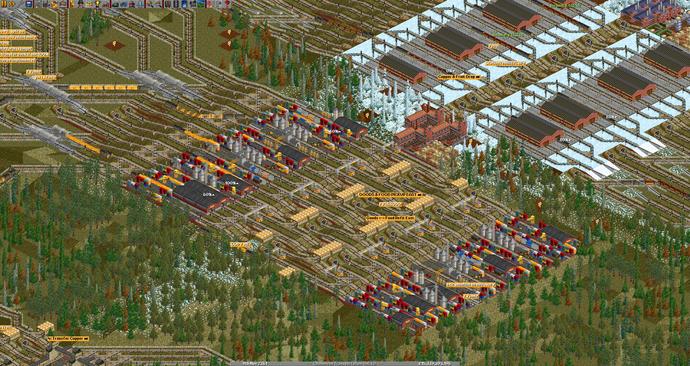 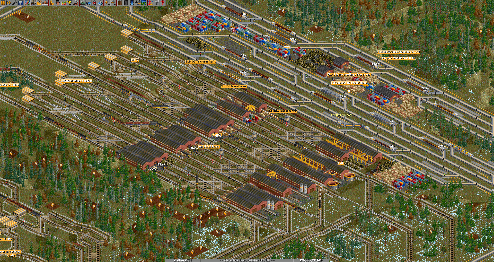 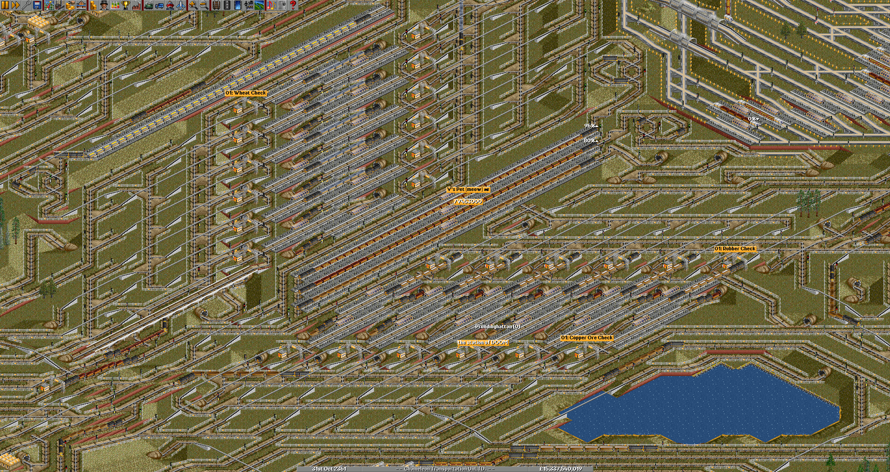


Public Server Game 225
The currently last game did not really bring anything new, it only used the stack-proof depots on the ro-ro and showed the old station designs again, this time only in larger scale. It also had both of the stations have their depots invisible as the station is a terminus, which is a bit more safe from lost trains getting looped in the station.


Conclusion
Refit stations have quite a history in our games and the possibilities how to build them have changed quite a lot. I am not quite sure whether it is valid to say that new designs were found instead of just saying that old ones have changed or been improved. This is simply because the newer design we have, the better it does or even introduces a new feature that solves some past issues. Therefore at this moment there are pretty much two ways how to build a refit station truly properly according to all the newest features or requirements.
However it is important to keep in mind that for example the prioritized stack-proof depot design is just a replacement for the area in front of platforms, but it can be built in any shape or form just like normal station. It can be a balanced terminus or a diagonal station as we have seen already. Either way, let’s try to find some more!
Categories: Community News, Gameplay
Chris Booth February 16, 2012 15:00
Great read! I never noticed how much these things have changed. I love refit station if only more train set permitted this as well as UKRS and NARS
LoPo February 16, 2012 17:43
Nice and structured overview V! Refit stations are indeed something special like Chris Booth sad 🙂
tneo February 21, 2012 10:18
Nice article, however your memory didn’t serve you right. The first refit game, was one in which I made the plan. This was the first time refit was available in OTTD, that was game 95. The concept as we have now is derived from that game, in which a dedicated area was used to refit a train instead. 🙂
Link to game: http://wiki.openttdcoop.org/PublicServer:Archive_-_Games_91_-_100#gameid_95